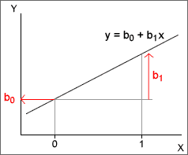

If you don't want to print now,
The data matrix
Many datasets contain several measurements from each individual (or plant, item or other unit). Each measurement type is called a variable.
A data set with more than one variable is called multivariate. One with two variables is called bivariate.
Scatterplots
A scatterplot shows each individual as a single cross against a vertical axis (for the variable, Y) and a horizontal axis (for the other variable, X).

By convention, the variable on the vertical axis is called Y and the variable on the horizontal axis is called X.
Scatterplots are needed to display relationships
The relationship between two variables cannot be determined from examination of the two variables in isolation. The two datasets shown in the scatterplots below have the same marginal distributions for X and Y, but the variables are related in very different ways.

Marginal distributions
Although they do not contain information about the relationship between the variables, a display of the marginal distributions can be usefully added to a scatterplot to enhance it, perhaps highlighting skewness in X and Y.

Time-ordering of univariate data
Some data sets are apparently univariate, but the measurements are made sequentially in time. A data set of this form is called a time series.
The time at which each measurement was made may be treated as an additional numerical variable, and the measurement can then be plotted against time. This type of scatterplot is often called a time series plot.

Strength of relationship
The most important information that a scatterplot shows is the strength of the relationship between the variables. The closer the points to a straight line or curve, the stronger the relationship.
If higher values of one variable tend to be associated with higher values of the other variable, the crosses on the scatterplot will be in a band with positive slope and the relationship is said to be positive. If high values of one variable tend to be associated with low values of the other variable, we say that there is a negative relationship.

The strength of the relationship between two variables is usually the most important information that we gain from a scatterplot but a scatterplot may display other features.
Outliers
Values that seem 'different' from the rest of the data are called outliers.
An outlier may be an extreme value of one or other variable, but an individual may be an outlier even though neither X nor Y is unusual on its own. One point is an outlier in each of the three data sets below.


The point is an outlier in the righthand data set because it lies well above the main group of points — its y-value is much higher than others with similar x-values.
Importance of outliers
Outliers are features of a data set that must be carefully checked. An outlier is often caused by a recording or transcription error, so...
First check that the values of the variables are correctly recorded.
Sometimes an outlier arises because an individual is fundamentally different from the others. Identifying what makes the individual different often gives considerable insight into the data.
The individuals should be further examined (perhaps collecting further information from them) to try to assess whether the outlier individual has distinct characteristics.
An outlier that is either extreme or that has other distinctive characteristics would often be deleted from the data set, but should be mentioned in a report about the data.
Clusters
Sometimes the cloud of crosses separates into two or more groups which are called clusters. As with outliers, clusters provide important information that should be further investigated.

The individuals should be examined (perhaps collecting further information from them) to assess whether the clusters correspond to individuals with distinct characteristics. For example, the clusters may correspond to males and females, or two different species of plant.
Interpreting outliers or clusters
We have described some information that may be read from a scatterplot. But how strong must the corrresponding patterns be before we should report them?
In both univariate and bivariate data sets, outliers or clusters must be distinct before we should conclude that they are real, in the absence of further external information confirming that the individuals are distinct.
Particularly in small data sets, outliers, clusters and other patterns may arise by chance, without being associated with any real features in the individuals.
Be careful not to overinterpret features in scatterplot unless they are well defined, especially if the sample size is small.
Causal relationships
In many bivariate data sets, the relationship between the two variables is not symmetric. From the nature of the variables and the way that the data were collected, it may be clear that one variable, X, can potentially influence the other, Y, but that the opposite is impossible.

In such data, the variable X is called the explanatory variable and Y is called the response.
Experiments
In an experiment, the person conducting the experiment controls the values of the explanatory variable. A well-designed experiment always ensures that the relationship between the explanatory variable and response is causal.
Observational studies
If the person collecting the data has no control over either of the variables, and simply records a pair of values from each individual, then the data are called observational. If one variable is an earlier measurement than the other, we may also be able to treat it as an explanatory variable and the later variable as the response.
Even if the relationship is not causal, we are sometimes interested in predicting the value of one variable from the other. The variable being predicted would then be treated as the response.
Units and strength of a relationship
A numerical summary of the strength of the relationship between two variables should not depend on the units in which we measure the two variables. The strength of the two relationships between the Metabolic rate (CO2 produced) and Weight of turkeys are the same in both of the scatterplots below.

We therefore start by defining units-free versions of the two variables and will summarise the strength of the relationship in terms of them.
Z-scores
The standardised form of a variable X is found by subtracting its mean then dividing by its standard deviation,
standardised value, 
The resulting values are called z-scores and are the same, whatever the units in which X was originally recorded.
Properties of z-scores
A standardised variable always has zero mean and standard deviation one.

From the 70-95-100 rule-of-thumb,
An individual's z-score tells you how many standard deviations it is above the mean. From its value, you can tell whether the value is very high (say over +2) or low (say under -2) in relation to the other values of the variable.
Definition
The correlation coefficient is usually defined by the formula

It is however easier to understand if written in terms of standardised versions of X and Y,

The correlation coefficient is a kind of average of the products of the z-scores.
How does r relate to the shape of a scatterplot?
The following properties of r explain in general terms how its value is related to the strength of a relationship in any particular scatterplot.
 |
 |
 |
|
 |
 |
| −1 ≤ r ≤ +1 | |
How does r relate to the shape of a scatterplot?
The properties on the previous page describe the general behaviour of the correlation coefficient, but do not give enough resolution for you to anticipate the type of scatterplot that might have correlation coefficient 0.8 say, or 0.96.

Note that values of r between -0.5 and 0.5 correspond to very weak relationships.
Correlation and nonlinear relationships
The correlation coefficient, r, is a good description of the strength of a relationship provided the crosses in a scatterplot of the data are not scattered round a curve. If the data are scattered round a curve, the relationship is called nonlinear and r may seriously underestimate its strength.

The correlation coefficient does not describe the strength of nonlinear relationships adequately.
Always look at a scatterplot first
Although the correlation coefficient is a good description of the strength of many relationships, it does not adequately describe others.
A scatterplot should always be examined to help assess whether there are features in the data that the correlation coefficient cannot describe.
The data sets below share the same value of r = 0.816 (and the same means and st devns for X and Y) but their scatterplots show that different conclusions should be drawn from them.

Correlation coefficient and nonlinear relationships
The correlation coefficient, r, is a good description of the strength of linear relationship but not nonlinear ones. If a scatterplot shows marked curvature, the correlation coefficient can considerably understate the strength of the relationship.
Transform the variables to linearise the relationship
Nonlinear transformations of X and Y alters the shape of the relationship. It is often possible to linearise a relationship by transforming one or both variables.
The strength of a nonlinear relationship can therefore be described with the correlation coefficient after a transformation to one or both variables has been applied to remove the nonlinearity.


The notion of prediction
Notation and convention
If the variables can be classified as an explanatory variable and a response, we use the letter X to denote the explanatory variable and Y to denote the response.
Always draw the response variable, Y, on the vertical axis of a scatterplot and X on the horizontal axis.
Predicting the response
The correlation coefficient describes the strength of a relationship, but does not help you to predict Y from X.
A curve or straight line that is drawn close to the crosses on a scatterplot (by eye or by any other method) is called a regression line and can be used to 'read off' the y-value corresponding to any x.

Equation to describe a regression line
A regression line could be drawn 'by eye' through a scatterplot, but we restrict attention to simple mathematical functions
y = ƒ ( x )
since they are easier and more objective to use.
Linear model
Some relationships must be described by curves, but a straight line is an adequate description of many bivariate data sets.
y = b0 + b1 x
The constant b0 is the intercept of the line and describes the y-value when x is zero. The constant b1 is the line's slope; it describes the change in y when x increases by one.

The predicted response at any x-value is
 = b0 + b1 x
= b0 + b1 x
Fitted values
To assess how well a particular linear model fits any one of our data points, (xi, yi), we might consider how well the model would predict the y-value of the point,
 = b0 + b1 xi
= b0 + b1 xi
These predictions are called fitted values.
Residuals
The difference between the i'th fitted values and its actual y-value is called its residual.
ei = yi − 
The residuals describe the 'errors' that would have resulted from using the model to predict y from the x-values of our data points.

Note that the residuals are the vertical distances of the crosses to the line.
Aim of small residuals
The residuals from a linear model (vertical distances from the crosses to the line) indicate how closely the model's predictions match the actual responses in the data.

Small residuals are good, so the parameters b0 and b1 should be set to make them as small as possible.
Least squares
The size of the residuals is summarised by the residual sum of squares,

'Good' values for b0 and b1 can be objectively chosen to be the values that minimise the residual sum of squares. This is the method of least squares and the values of b0 and b1 are called least squares estimates.
The diagram below respresents the squared residuals as blue squares. The least squares estimates minimise the total blue area.

Formulae
The problem of minimising the residual sum of squares is not difficult mathematically, but you will rarely require or use the resulting formulae for b0 and b1 since spreadsheets, statistical programs and even scientific calculators will do the calculations for you. However, for completeness, the formulae are

Nonlinear relationships
A simple linear model is only appropriate when the cloud of crosses in a scatterplot of the data is regularly spread around a straight line. If the crosses are scattered round a curve, the relationship is called nonlinear and other models must be used.
Outliers
Another problem arises if there are outliers — observations that do not conform to the pattern and variability exhibited by the rest of the data. In a linear model, the most important type of outlier is a data point that lies at a distance from the line that would fit through the rest of the data.
The individual corresponding to any outlier should be carefully examined. Recording or transcription errors may be the cause. Alternatively, it may be possible to determine some distinguishing characteristic of the individual that underlies the unusual response measurement.
If an outlier is extreme enough, or if a special cause for its unusual behaviour can be found from outside information, the individual can be classified as aberrant and deleted from the data set.
It is important to look at any data set graphically before fitting a linear model to check that no curvature or outliers is present.
Detecting problems with the model
If outliers or curvature are present in a data set, they are often visible in a scatterplot of the response against the explanatory variable. However these features are usually clearer if the residuals are plotted against X rather than the original response.

Different lines are used to predict Y and to predict X
The least squares line for predicting Y from X,
y = b0 + b1 x
minimises the sum of squared vertical distances between the points on a scatterplot and the line. On the other hand, if we are interested in predicting X from Y using a line,
x = c0 + c1 y
the residuals are the horizontal distances between the points and the line, and least squares minimises their sum of squares.

Different lines minimise the sum of squares of horizontal and vertical distances.
About the two least squares lines
The two least squares lines can be written in terms of standardised variables,
| Equation of least squares line to predict Y from X | |
|---|---|
| Equation of least squares line to predict X from Y |
where r is the correlation coefficient between X and Y. Since r is always less than 1, the least squares line for predicting Y from X is the more horizontal (closer to being parallel to the x-axis) of the two lines.

Linear model with transformed variables
If the relationship between Y and X is nonlinear, a linear model will give poor predictions and must be avoided.

However, by transforming one or both of the variables, it is often possible to linearise the relationship and therefore use least squares to fit a linear model to the transformed variables.

A logarithmic transformation of either Y or X often works, but a more general power transformation is sometimes needed to linearise the relationship.
Adding a quadratic term
An alternative solution to the problem of curvature is to extend the simple linear model with the addition of a quadratic term,
y = b0 + b1 x + b2 x2
Fitted values and residuals are defined (and interpreted) in a similar way to those for a linear model,
 = b0 + b1 xi + b1 xi2
= b0 + b1 xi + b1 xi2
ei = yi − 
As in a linear model, the quadratic model's residuals are the vertical distances between the crosses in a scatterplot and the curve. We again use least squares to estimate the unknown parameters — choose values of the three parameters to minimise the residual sum of squares,


The shape of a relationship is only known around the data
The models that we have used to describe the relationship between a response, Y, and explanatory variable, X, are usually only approximations to the 'real' relationship. For example, a scatterplot may look linear, but we really have no information about the shape of the relationship beyond our data.

A model may be useful for predicting Y from values of X that are within the range of x-values in our data, but we should be very cautious about using it to predict Y outside this range. This is called extrapolation and it can be badly in error.
Avoid using a model to predict Y far beyond the available data.
Different plotting symbols for a third variable
The simplest way to show the relationship between three numerical variables is based on a scatterplot of two of the variables, with the third variable being represented by differing symbols instead of identical 'crosses'. Possibilities are:
Although this kind of scatterplot is easy to draw, it is usually hard to interpret. The decision about which of the three variables to represent using the plotting symbol can make interpretation easier.

3-dimensional scatterplots
The most direct way to extend a standard scatterplot of two variables, X and Y, to include a third variable, Z, is to add a third dimension to become an axis for Z. Each individual would be represented by a cross in a 3-dimensional cube.

Although a computer screen is only 2-dimensional, it can display a projection of such a 3-dimensional scatterplot. Rotating such a display with the mouse gives a good feel for the shape of the underlying 3-dimensional scatter of points. This is a dynamic display that is only effective on a computer — the information in the display is conveyed by movement. On paper, we can only present information in two dimensions.
Three-dimensional scatterplots are an interesting (and occasionally useful) way to display data. They are however much overrated as an analysis technique and simpler displays are usually more effective for extracting information from multivariate data.
Scatterplots of all pairs of variables
The problem of displaying relationships becomes even more difficult when there are more than three variables. It is possible to gain some insight into their relationships with an array of scatterplots of all pairs of variables, called a scatterplot matrix.
Brushing
Although a static scatterplot matrix reveals some aspects of the relationships between the variables, more insight into the data is obtained by adding dynamic features.
On a computer display, the scatterplots can be dynamically linked, so that clicking on a cross on one scatterplot highlights that individual in all scatterplots. Brushing extends this to allow highlighting of multiple crosses on a scatterplot with a 'brush' tool.

More about brushing
Brushing can be used on any linked displays of the same data set.

Slicing a scatterplot using a third variable
Slicing is a dynamic technique that only displays a subset of the individuals, based on a restricted range of values for one particular variable. For example, we might display a scatterplot of Y against X, but only for individuals whose values of Z are between 20 and 30. The subset can be dynamically changed with a slider or other control to show whether the relationship between X and Y is different for individuals with low Z and high Z.
Trellis plot
Slicing is a dynamic method and must therefore be performed on a computer. Although less effective, an alternative is to show a series of static plots for different slices of the data. This is called a trellis plot.